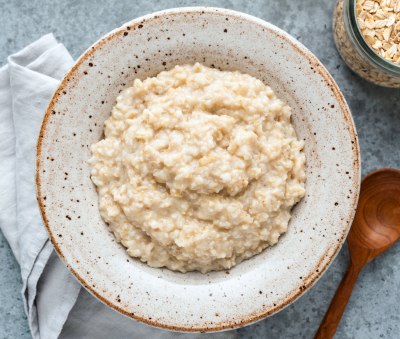

Havregrøt

Beskrivelse
Havregrøt er noe av det sunneste du kan spise og er veldig enkelt å lage.
Ingredienser
per porsjon
- 1 dl havregryn
- 2,5 dl vann
- en liten klype salt
Oppskrift
- Bland gryn og vann i en kasserolle.
- Kok opp og la småkoke i 5 minutter.
- Rør om av og til.
- Dander med friske bær, honning, syltetøy, kanel og sukker eller hva enn du måttte ønske.
Ønsker du en fyldigere grøt kan du erstatte vann med melk!